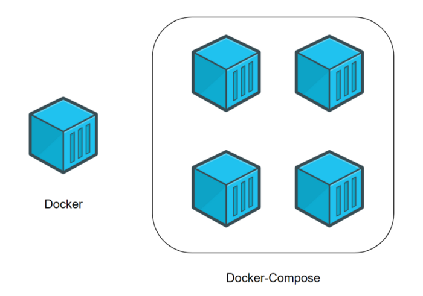

Docker
13.10.2021
Minaidis Kostas | Instructor | Codeworks
Docker in a Nutshell
What is Docker?
Docker Engine (or simply Docker) is a software that creates and manages Docker Containers (or simply Containers).
It was created by Docker, Inc. San Francisco, a company specializing in cloud based technologies.
Fair enough. What are Containers then?
Docker Containers contain applications. They are a piece of software that lets you package your application code and all its dependencies in a single unit so that it can quickly and reliably run on any computer environment.
Applications contained in such a manner are called Containerized Applications as Virtual OS Environments, made for hosting and running applications.
They are similar to Virtual Machines, but much faster, more lightweight and extremely efficient.
What are the benefits of using Containers?
You can quickly test your applications in development with exactly the same setup as in QA, Test or Production environments.
You can also share this environment with other developers and ensure that you are working on exactly the same setup.
No more OS compatibility issues, missing dependencies or version mismatches.
You can also do cool things like `diff`-ing Containers and be able to debug your applications by comparing different running environments.
The Lifecycle of a Container
Step 1) Setting up our application.
This is what we were already doing during our usual application development cycle: writing code, downloading dependencies and so forth.
Step 2) Dockerfile: the instructions for building a Docker Image.
The contents of a Dockerfile contain instructions so that Docker can know how to download and install our application's dependencies, copy our files and folders that contain our application's code and also how to initialize and run our application. A programmer can think of Dockerfiles as the source code.
Step 3) Docker Image: an object that contains all the necessary files and folders for our application to run.
It is (a Container) in a stopped/sleep state though. A programmer can think of Images as Classes waiting to be instantiated.
Step 4) Container: This is when we use a Docker Image to run our application.
The Image is used to spawn instances of our running application. A programmer can think of Containers as the instances of Classes: new DockerImage();
A bit more about the Docker concepts mentioned in the steps above...
Docker Images
(Container Templates)
You can think of Images as a package that contains an OS filesystem, our application and all its dependencies, waiting to be instantiated.
We can share Docker Images with anyone by uploading them to the Docker Registry (Hub) and we can also download (pull) Images and use them in our own environment. Images tend to be small in size.
Docker Container
A Docker Image is actually a stopped Container. A Container is a running Image and it's all about making apps simple to build, share, ship and run.
Of course, you'll need the Docker software in order to run a Docker Container.
HANDS-ON
Containerizing a Node.JS App
Just a basic Node.JS app.
./app.js
require("http").createServer((req,res)=>{
res.end("Welcome to Node Web Server!");
}).listen("8080", ()=>{
console.log("Server listening on 8080");
});
Quick test: node app.js
Our Dockerfile
(Will be used as a template for our Docker Image)
FROM mhart/alpine-node
COPY app.js .
EXPOSE 8080
CMD node app.js
docker build -t mynodeapp .
docker images
# -p hostPort:containerPort
docker run -p 8080:8080 mynodeapp
docker ps -a
docker stop [ContainerID]
docker run -p 9000:8080 mynodeapp
docker stop [ContainerID]
docker exec -it [ContainerID] /bin/sh
Just a basic Express.JS app.
./express.js
require("express")().get("/", (req,res)=>{
res.send("So Expresso!");
}).listen(8080, ()=>{
console.log("Express listening on 8080");
});
Quick test: node express.js
Our Dockerfile
(Will be used as a template for our Docker Image)
FROM mhart/alpine-node
COPY package.json package.json # ADDITIONS
RUN npm install # ADDITIONS
COPY express.js .
EXPOSE 8080
CMD ["npm","start"]
docker build -t expressapp .
docker run -d -p 8080:8080 expressapp
Docker Compose
(quick mention)
Typical applications consist of a mixture of multiple components such as backend, frontend, database, web server or another stand-alone app dependency etc..
In order to manage a full-fledged application, we need to create and maintain many separate Dockerfiles.
Here, docker-compose comes to the rescue. With the help of docker-compose, we can define a multi-container application (all complex stack) in one single file and run it with a single command.
docker-compose up
Sample Docker Compose YAML
docker-compose.yml
version: '3.1'
services:
postgres_db:
container_name: postgres_db
image: postgres:latest
environment:
- POSTGRES_PASSWORD=root
- POSTGRES_USER=root
- POSTGRES_DB=users-db
ports:
- 5432:5432
my-webapp:
container_name: app-springboot-postgresql
image: app-springboot-postgresql
build: ./
depends_on:
- postgres_db
ports:
- 8088:8088